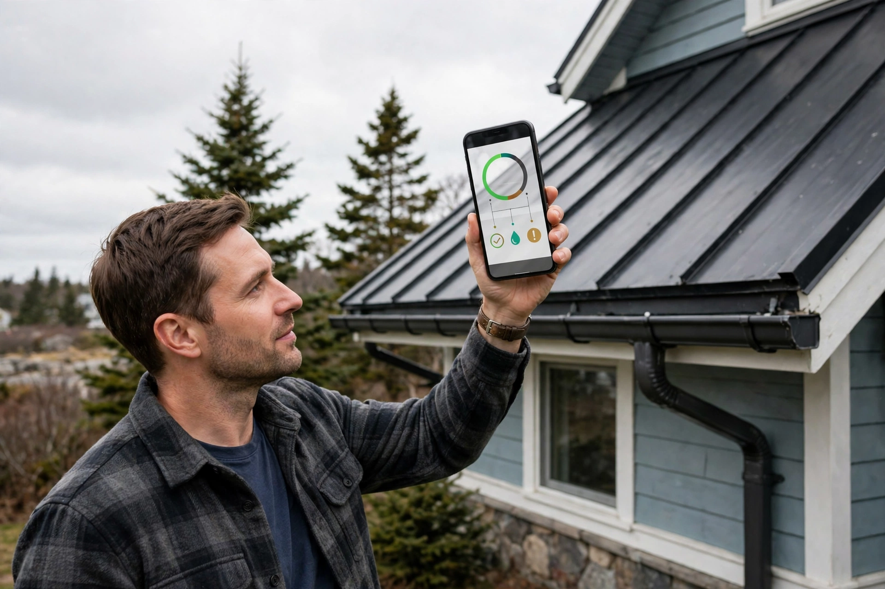
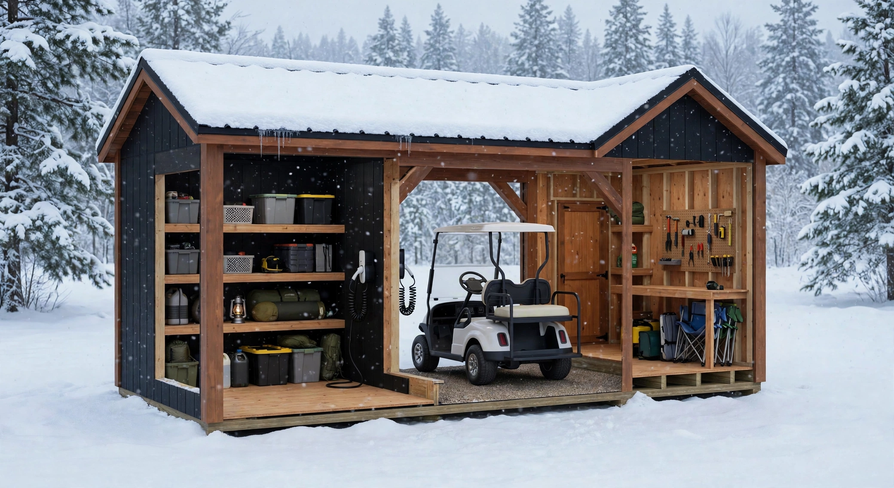
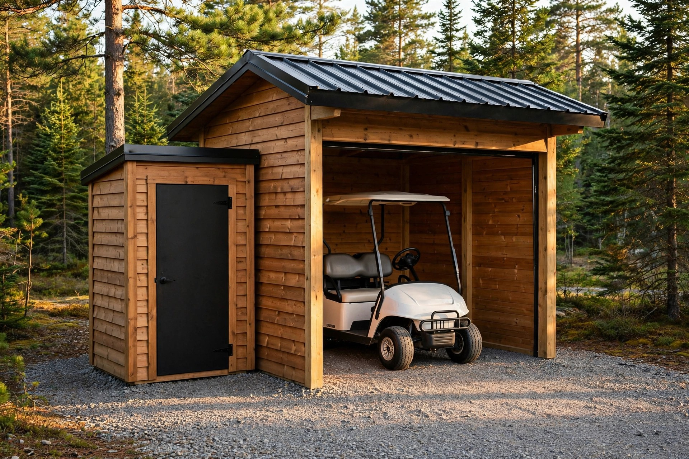
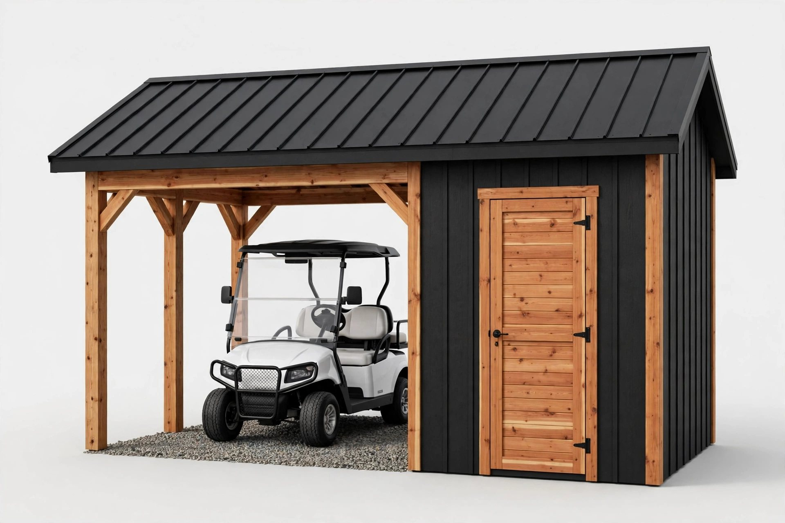

PLaCED Outdoor Sheds · Quispamsis · Kennebecasis Valley · Saint John · Southern New Brunswick
The PLaCED Venture Handbook
Make this place your home.
Twelve full-length field guides on the 18×10 Full Station camp hub, Saint John permit rules, Bay of Fundy snow loads, off-grid solar, and campground rental rows — written for the people who will actually use the buildings, and the park owners who will host them.
Every price below is a cash price. Add 15% NB HST. The 30% material deposit is calculated on the pre-tax cash price, and the balance plus HST is due on completion. All major payment methods are accepted: credit, debit, Interac e-transfer, and cash.
18×10 Full Station — 5 rungs + 2 bundles
Rung / Bundle
Cash
30% Deposit
Rung 1 — Open Canopy
$4,499
$1,350
Rung 2 — Winter Canvas Closure
$4,799
$1,440
Rung 3 — Fitted LP Wood Panels
$4,999
$1,500
Rung 4 — Single 7×7 Steel Roll-Up (Flagship)
$5,299
$1,590
Rung 5 — Dual 7×7 Drive-Thru Roll-Ups
$6,299
$1,890
Bundle 1 — Pro Wired & Safety
$6,899
$2,070
Bundle 2 — King of Scenic View Solar
$9,999
$3,000
Pro Wired saves $338 vs. $7,237 à-la-carte. King of Scenic View saves $993 vs. Pro Wired plus add-ons. Group batching: 3 to 5 park units on a single drop week saves $250 per unit.
Standard sheds — cash prices
Model
Cash
30% Deposit
8×10 Utility / Baby Barn
$3,999
$1,200
8×12 Camp / Gable Storage Barn
$4,199
$1,260
10×12 Heavy Workshop
$4,950
$1,485
12×16 Bunkie / Heavy Workshop
$6,499
$1,950
12×20 Lofted Barn
$9,499
$2,850
8×12 & 10×16 RV Porch Editions
Quote on Request
8×10 (80 sq ft) and 8×12 (96 sq ft) sit under Saint John’s 10 m² (107.6 sq ft) accessory permit exemption threshold. Larger builds need a permit — see Guide 02.
Guide 01 · Pricing & Park ROI
Dealer Lot Arbitrage: Why Paying $12,086 for an Empty 10×16 Box Makes Zero Sense in Southern NB
Pricing & Park ROI
The 18×10 Full Station: drive-through cart bay in the middle, finished wings on both sides.
The roadside lot looks cheap until you read the total. A plain 10×16 wood box on a Quispamsis lot carries a $7,252 sale tag and a $9,065 regular tag — or $335.74 a month for 36 months, which comes to $12,086 all in. That is the price of an empty, unpowered box with swing doors.
The monthly number is the whole trick. $335.74 a month sounds like a utility bill. It is not. Over three years it buys a depreciating wooden box for nearly double its cash value, and at the end of the term the buyer owns a shed that still has no power, no lockers, no workbench, and doors that jam on frost-heaved ground every February. The lot’s margin is not in the lumber. It is in the months.
Put the same money against a finished station and the gap is the story. The 18×10 Full Station flagship — a single 7×7 steel roll-up, drive-through cart bay, insulated battery locker on the left, sealed gas locker on the right, and a workbench wall — is $5,299 cash. That is $1,953 less than the dealer’s sale tag for the empty box, $3,766 less than the regular tag, and $6,787 less than the rent-to-own total. The cheaper option is also the one with two finished wings, separated fuel and battery storage, and a roof that carries solar.
Dealer lot 10×16 box
PLaCED 18×10 Full Station
Cash price
$7,252 sale / $9,065 regular
$5,299 flagship
36-month total
$12,086 ($335.74/mo)
$5,299 + 15% NB HST
Cart bay
Wood floor, swing doors
Gravel bay, steel roll-up, drive-through
Storage wings
None
Battery locker left, gas locker right
Power
None
Off-grid solar option, EV charger ready
Workbench
None
Bench, pegboard, shelving as one package
What to ask any dealer before you sign
What is the total paid over the full term — not the monthly number?
Is the floor wood or gravel under the cart, and what happens when it stays wet?
Are the doors steel roll-up or wooden swing, and do they clear frost heave?
Is delivery included, and how far? Is the pad included or extra?
Does the building need a permit at your lot, and who handles it?
None of this is an argument against buying a shed on a lot. It is an argument against buying one without reading the total. A lot box has its place: a homeowner who needs storage this week and cannot wait for a build slot will take the lot box every time. But a seasonal camper ordering before the season opens has time — and with time, the finished station wins on price, on storage, and on what the building actually does.
Arbitrage is just a fancy word for buying the same square footage where it costs less. In Southern NB right now, the gap between a dealer’s monthly number and a finished station’s cash price is the whole business — thousands of dollars, sitting in plain sight on the lot’s own tag.
Guide 02 · NB Permits & Snow Loads
Saint John’s 10 m² (107.6 sq ft) Accessory Permit Rule Explained: 8×10 & 8×12 vs. Larger Builds
NB Permits & Snow Loads
An 8×10 at 80 sq ft and an 8×12 at 96 sq ft both sit under the permit threshold.
In the City of Saint John, an accessory building with a gross floor area of 10 square metres (107.6 sq ft) or less needs no building permit. That one line decides the paperwork for most backyard sheds — and it is the reason the two smallest PLaCED sizes exist in the first place.
The arithmetic is short. An 8×10 is 80 sq ft. An 8×12 is 96 sq ft. Both sit under the 107.6 sq ft line, so both install without a permit application, a fee, or a wait. A 10×12 is 120 sq ft — over the line — and needs a permit. The 18×10 Full Station is 180 sq ft, so it needs a permit in Saint John too. Size the building to the rule, or plan the paperwork into the schedule. Do not assume a big building is exempt.
Over the threshold, the city asks for a signed application form, the permit fee plus a refundable deposit, and a site plan showing lot size, the location and dimensions of the proposed and existing accessory buildings, setbacks, easements, and the driveway. Typical shed drawings or structural details go with it. A second storey or loft needs an exiting floor plan and truss plans, and a bathroom needs a water and sewage permit. Metal accessory buildings need drawings stamped by a Professional Engineer licensed in New Brunswick, plus engineer documentation on completion. Heritage Conservation Areas and Flood Risk Areas carry their own rules — contact the Heritage Officer before applying, and expect a flood analysis where one applies.
Quispamsis runs its own process. Applications go through the town’s online portal, and accessory buildings there must not exceed 6 m in height above mean grade. A detached garage must sit behind the front line of the dwelling and at least 3 m from the dwelling. The town’s application asks for the address, PID, property description, contractor and applicant contact, an owner consent letter, property measurements, easement approvals, septic approval where the lot is not on municipal sewer, and a site plan. The rules are different from Saint John’s, so a build that is permit-exempt on one side of the river may not be on the other.
Model
Footprint
Saint John permit?
8×10 Utility / Baby Barn
80 sq ft
Exempt — under 107.6 sq ft
8×12 Camp / Storage Barn
96 sq ft
Exempt — under 107.6 sq ft
10×12 Heavy Workshop
120 sq ft
Permit required
12×16 Bunkie
192 sq ft
Permit required
18×10 Full Station
180 sq ft
Permit required
Before you order any build over the threshold
Measure the lot and confirm setbacks for your zone — do not guess them.
Check whether the lot sits in a Heritage Conservation Area or a Flood Risk Area.
Confirm who prepares the site plan and the structural drawings.
Ask the city’s One Stop Development Shop to confirm the fee and deposit for your estimate.
Build the permit wait into the schedule — it is part of the build, not an afterthought.
This guide is general information from the city and town sources, not legal advice. Confirm your lot with the City of Saint John One Stop Development Shop or Quispamsis Planning and Development Services before ordering, and keep the confirmation with the build file.
Guide 03 · NB Permits & Snow Loads
Engineering for 1.64 to 1.90 kPa Bay of Fundy Snow Loads: 29-Gauge 3-Rib Steel on a 4:12 Pitch
NB Permits & Snow Loads
Closed up for winter: steel roof, steel door, and a pitch that sheds snow instead of holding it.
Southern New Brunswick roofs carry real snow. Reported ground snow loads for the Saint John area run about 1.64 to 1.90 kPa — wet, heavy snow, often with rain on top of it. A shed roof here is not a decoration. It is a structural decision, and it is the first thing to get right.
A kilopascal is a measure of pressure, and in roofing terms it is weight per square metre. At 1.64 to 1.90 kPa, a square metre of roof can be asked to hold roughly 167 to 194 kilograms of snow — and Fundy snow is the wet kind that packs dense instead of blowing off. Rain-on-snow events add water weight to a snowpack that is already there. A roof that holds that load flat, or a roof covering that traps it, is a roof that will fail in the season it was built for.
The Full Station answers with pitch and steel. A 4:12 gable pitch is steep enough that wet snow slides instead of sitting, and a continuous 29-gauge 3-rib steel roof gives it a smooth surface to slide on. Steel does not curl, does not blow off in a Fundy gale, and does not hold the ice dams that form where shingles meet a cold eave. The side walls stand 7'-0" at the eaves with an 8'-8" ridge peak, so the roofline stays more than 4 feet below a 13-foot fifth-wheel roof — low enough to sit cleanly on a campground lot, high enough to clear a cart with room to spare.
Pitch alone is not the whole answer. The roof needs its fasteners, its ridge, and its eaves detailed for the same weather: color-matched screws with neoprene gaskets, a ridge cap that seals the peak, and eaves that let meltwater leave instead of backing up under the sheets. A steel roof that is pitched right and fastened wrong will still leak at the ridge in the first driving rain. That is why the roof goes on in the shop, on jigs, where the fastening pattern is the same on every panel — not in a field, in the wind, by eye.
Roof choice
Winter behaviour
What fails first
29-gauge 3-rib steel, 4:12 pitch
Sheds wet snow, no ice dams
Nothing in a normal season — check fasteners each spring
Asphalt shingles, shallow pitch
Holds snow, dams at the eave
Shingle curl, blow-off, eave leaks
Flat or near-flat roof
Holds the full snow load
Deflection, ponding, seam failure
What to check on any shed roof before you buy
Pitch: 4:12 or steeper sheds Fundy snow. Shallower holds it.
Material: steel sheds snow and never curls. Shingles are a maintenance item.
Fastening: gasketed screws on a set pattern, not nails or staples.
Ridge and eaves: capped peak, clean water exit, no place for meltwater to sit.
Height: eave and peak numbers in writing, so the unit fits the lot and the sightlines.
Snow load is not a marketing number. It is the load the roof will actually see, in the winters the building will actually stand through. Build for the top of the range, and the roof stops being something to worry about.
Guide 04 · 18×10 Camp Hub & Solar
Gravel Bay vs. Wood Subfloor: Preventing Floor Rot Under Wet Golf Carts
18×10 Camp Hub & Solar
Cutaway view: gravel under the cart, wood floors only in the dry wings.
A golf cart does not park like a box of Christmas decorations. It comes in wet, dripping, muddy, and warm from running — and it parks on the same spot, in the same building, all season. The floor under a cart takes abuse no storage shed floor ever sees, and the floor is where cheap cart shelters die first.
Wood under a wet cart rots from the top down. Tires carry water, mud, and road salt into the bay, and the undercarriage drips long after the rain stops. A wood subfloor holds that moisture against its own surface, stains, softens, and eventually gives under the cart’s weight — right where the wheels sit, which is exactly where it is hardest to repair. Hot exhaust on a damp wood floor adds its own damage over a season. The floor looks fine in May and is a repair job by October.
The Full Station puts no wood under the cart at all. The center bay sits on compacted 3/4-inch crushed stone gravel: it drains, it dries, it never rots, and it never stains. Water goes down through the stone instead of sitting on a surface. The gravel also takes the weight without complaint — four cart tires on stone is a non-event — and if the bay ever ruts, it is fixed with a rake and a wheelbarrow of stone, not a floor replacement.
The wings are a different story, because they stay dry. Both 4×10 wings sit on 5/8-inch tongue-and-groove wood subfloors over 4×4 pressure-treated skids — the battery locker on the left, the workbench and gas locker on the right. Those floors carry totes, tools, and boots, not wet tires, so wood is the right material there: warm underfoot, easy to sweep, and easy to fasten shelving and bench legs to. The rule is simple and it is the whole design: gravel where it gets wet, wood where it stays dry.
Gravel bay (cart zone)
Wood floor (wing zones)
Build
Compacted 3/4" crushed stone, no subfloor
5/8" T&G on 4×4 PT skids
Water
Drains through, never pools
Stays dry — no tires, no drips
Rot risk
None — no wood to rot
Low — dry zone, treated skids
Repair
Rake and top up stone
Replace a board, not a floor
Keeping the bay right, season after season
Re-grade the gravel each spring and top up stone where the tires have tracked it thin.
Keep the bay clear of leaves and debris so water keeps draining instead of damming.
Check that the pad still crowns slightly to the door so meltwater runs out, not in.
Sweep the wing floors and check the skid ends for standing water after heavy rain.
A floor is not a place to save money. It is the part of the building the cart touches every single day, and the part that decides whether the station is still solid in year five or a repair bill in year two.
Guide 05 · 18×10 Camp Hub & Solar
How PLaCED Coordinates Vetted Local Trade Partners & Licensed NB Electricians ($400/Hub Standard)
18×10 Camp Hub & Solar

One crew builds the timber and steel. Licensed electricians do the circuits.
A camp hub is two jobs in one building: a timber and steel structure, and an electrical system. PLaCED builds the first and coordinates the second. The crew frames, roofs, and fits the lockers. Vetted local trade partners handle the work that needs their ticket, and licensed NB electricians handle every circuit — the battery locker outlet, the EV charger, the LED kit, and any solar tie-in.
The split is deliberate. A shed crew that also wires panels is a crew doing work outside its ticket, and an electrician who also frames walls is an electrician doing work outside theirs. Keeping the trades separate keeps the warranties clean and the sign-offs real: the timber is the builder’s responsibility, the circuits are the electrician’s, and neither one signs for the other’s work. When something needs fixing in year three, there is no argument about whose job it was.
The electrical work runs on a flat $400-per-hub allowance, priced into the build rather than billed by the hour. That covers the standard hub scope: the exterior GFCI receptacle for the battery wing, the bay EV charger circuit, the LED and USB kit, and the sign-off on the installation. A King of Scenic View solar build carries a two-circuit allowance where the solar and the cart charging run as separate circuits. The point of a flat allowance is that the number is known before the build starts — no hourly meter running while the electrician works, and no surprise on the final invoice.
Sequencing matters as much as pricing. The electrical rough-in happens while the wings are still open, before the lockers are closed up and the linings go in. The electrician signs off before handover, not after — the build is not complete until the circuits are tested and the sign-off sheet is in the file. That order is what keeps a charger circuit from becoming a retrofit, with wires run on the surface of a finished wall because nobody planned the route.
Scope
Who does it
Allowance
Timber, steel roof, lockers, doors
PLaCED shop crew
In build price
GFCI, charger circuit, LED/USB kit
Licensed NB electrician
$400/hub
King solar: two-circuit setup
Licensed NB electrician
$800 two-circuit allowance
Sign-off before handover
Licensed NB electrician
Included
What the coordination covers
One build file: timber spec, electrical scope, and sign-off sheet together.
Flat $400/hub allowance — known before the build, not metered after it.
Rough-in before close-up, sign-off before handover. No retrofits through finished walls.
Any hub with a battery outlet, EV charger, LED kit, or solar tie-in gets a licensed electrician. No exceptions.
Good coordination is invisible when it works: the doors close, the lights come on, the charger charges, and nobody had to come back. That is the standard the $400 allowance buys.
Guide 06 · 18×10 Camp Hub & Solar
Opposite-Wing Ventilation Safety: Rising Hydrogen (H₂) vs. Heavy Fuel Vapors & Exterior 120V GFCI Placement
18×10 Camp Hub & Solar

Cutaway view: battery left, gas right, and the whole gravel bay between them.
A camp hub stores two things that must never meet: charging batteries and liquid fuel. Batteries give off hydrogen while they charge. Fuel gives off vapors that are heavier than air. The two gases behave in opposite ways, so the building treats them in opposite ways — and puts them on opposite ends of the frame.
Hydrogen is lighter than air. It rises. The battery locker therefore vents high: an R-12 rigid-foam insulated cold box on the left wing, with a high-wall passive louver that lets rising hydrogen out at the top. The box holds the battery above freezing through the winter while the vent keeps the gas from collecting under the roof. Fuel vapor is the mirror image. Gasoline and two-stroke vapors are heavier than air, so they settle low. The fuel locker on the right wing therefore vents low: a bottom intake louver four inches above the floor, and a 3-inch straight-through roof vent stack with a rain cap that carries the vapor up and out.
Separation is the second layer. The battery wing and the fuel wing sit on opposite ends of the 18-foot frame, with the whole 10-foot gravel bay between them. A gas that leaks on one side has to cross an open, ventilated bay to reach the other — and the bay is open air, not a sealed room, so nothing accumulates there. The workbench zone sits in the right wing with the fuel locker, but the locker itself is a sealed compartment inside that wing, with its own vent stack and its own padlock.
The third layer is the electrical rule, and it is absolute: the gas locker contains strictly zero electrical wiring, switches, lights, or receptacles. No outlet, no light, no charger inside that compartment — a mechanical padlock only. The battery side follows a matching discipline. The dedicated 120V GFCI receptacle mounts outside the sealed battery box, on the dry storage wall of the left wing. Only the low-voltage charger lead passes through a sealed grommet into the vented enclosure, and the placement is signed off by a licensed NB electrician. No mains voltage sits inside a hydrogen-vented compartment, ever.
Left wing — battery
Right wing — fuel
Gas
Hydrogen (H₂) — rises
Fuel vapor — settles low
Vent
High-wall passive louver
Bottom intake louver + 3" roof stack
Insulation
R-12 rigid foam cold box
Uninsulated sealed compartment
Electrical
120V GFCI outside the box, low-voltage lead in
Strictly zero electrical inside
Access
Weatherstripped access door
Padlock hasp + hazard decal
The safety checklist at handover
Battery left, gas right — confirm the wings are not mirrored.
High vent clear on the battery box; low louver and roof stack clear on the gas locker.
GFCI mounted outside the sealed battery box, not inside it.
No wiring, light, or outlet inside the gas compartment. Padlock only.
Electrician sign-off sheet in the build file before handover.
Ventilation safety is not a feature to upsell. It is the reason the wings are where they are, and the reason the whole station is 18 feet wide instead of 14. The layout is the safety system.
Guide 07 · 18×10 Camp Hub & Solar
7×7 Commercial Steel Roll-Up Doors vs. Wooden Swing Doors in February Frost Heave
18×10 Camp Hub & Solar
Single 7×7 steel roll-up on the flagship: it rides its tracks, whatever the ground does.
February is when a cart shelter proves itself or fails. The ground freezes, swells, and lifts — frost heave moves the earth under the building by inches — and the door is the part that has to keep working through it. Wooden swing doors do not. Steel roll-ups do, and the reason is geometry, not marketing.
A wooden swing door hangs on hinges and swings out over the ground. When frost heave lifts the pad or the threshold by even an inch, the door drags, binds, and eventually will not open at all — or will not close, which is worse in a building that stores fuel and batteries. The owner’s options are to shovel, to plane the door, or to wait for spring. None of those are a door working. The problem gets worse every winter as the door absorbs moisture, swells, and warps on top of the heave.
A commercial steel roll-up door rides in vertical tracks and rolls up into a drum canister overhead. It does not swing over the ground, so heaved ground cannot block it. The flexible bottom gasket seals over uneven gravel, taking up the couple of inches of heave without a gap the wind can find. The 7×7 opening sits inside a 9'-1" clear post width, so there is room on both sides of the door for the tracks and the canister. An electric opener with a visor remote is a $600 add-on for the owners who want to open the bay without getting out of the cart.
The roll-up is also the winter close-up. The Full Station ladder is built around it: open bay at the bottom, heavy canvas curtains next, fitted wood panels after that, and the single steel roll-up as the flagship. The dual roll-up rung adds a second 7×7 door on the back wall for true drive-through — in one side, out the other, without ever reversing a cart. Canvas never binds on heave, panels are solid and come off in May, and steel locks and lets the owner walk away for the winter.
7×7 steel roll-up
Wooden swing doors
Frost heave
Rides tracks, seals over heave
Drags, binds, jams shut
Opening
7'-0" wide × 7'-0" high
Double doors, same opening, more hardware
Winter
Locks, seals, forget it till May
Swells, warps, needs planing
Drive-through
Dual roll-ups, front and back
Not practical — two sets of swing doors
Choosing your close-up
Open bay: no closure, lowest cost, for carts that come home for winter.
Canvas curtains: heavy marine canvas with straps, never binds on heave.
Fitted wood panels: solid slip-in panels with latches, off in May.
Steel roll-up: the flagship. Locks, seals, and opens with a remote.
A door is not a detail. In a Fundy February it is the difference between a building that works and a building that waits for spring.
Guide 08 · 18×10 Camp Hub & Solar
Off-Grid 400W Roof Solar & Self-Heating 100Ah LiFePO4 Batteries for Seasonal Camps
18×10 Camp Hub & Solar
Dusk at the hub: roof solar, battery bank inside, and no trench back to the clubhouse.
A seasonal campground lot rarely has a power pedestal where the cart shelter sits — and trenching one in means digging through a park’s lawns, water lines, and somebody else’s lot. Roof solar solves the problem by putting the power where the building already is: 400 watts of monocrystalline panels on the front slope, feeding a battery bank in the left wing, running the lights, the trickle charger, and the door opener with no trench and no park hydro fees.
The battery is the part that makes the system work in New Brunswick. A 100Ah self-heating LiFePO4 bank holds the charge through the season and, crucially, keeps accepting a charge in the cold. Standard lithium batteries refuse to charge below freezing, which is exactly when a seasonal camp needs the tender running. The self-heating bank warms itself before it charges, so the winter trickle charge keeps working in January instead of shutting down in November. The panels feed it through an MPPT charge controller, and a 2000W inverter turns the stored power into the 120V the lights and charger need.
The King of Scenic View bundle puts the whole system together: 400W roof solar, the 100Ah self-heating LiFePO4 bank, the 2000W inverter, a remote roll-up opener, a 48V cart charger circuit, a security pack, and a NOCO winter tender — $9,999 cash, saving $993 against the Pro Wired bundle plus the add-ons. For carts that run long days and charge hard, an 800W solar boost array is a $3,400 add-on that doubles the roof harvest. Every solar and electrical tie-in is signed off by a licensed NB electrician, and the panels are rack-mounted on the front slope of the steel roof, where the sun hits and the snow slides off.
Solar tier
What it runs
Cash add-on
400W + 100Ah LiFePO4
LEDs, trickle charge, door opener
$2,400
800W boost + 200Ah
Everything above, plus heavy 48V cart charging
$3,400
King bundle (all-in)
Solar + opener + 48V charger + security + tender
$9,999 turnkey
What off-grid does and does not mean
It does mean: lights, trickle charging, and the door opener run from day one, with no trench and no park hydro bill.
It does not mean: unlimited power. The bank is sized for the hub’s loads — lights, tender, opener — not for heating the building.
Winter care: the self-heating bank handles the cold, but keep the panels clear of snow after a storm so the harvest keeps coming.
Safety: solar tie-ins and charger circuits are electrician work, signed off before handover.
Off-grid is not a compromise for a camp hub. It is the point: the building makes its own power, where it stands, and the park never has to dig a trench for it.
Guide 09 · Pricing & Park ROI
How the 30% Pre-Tax Material Deposit & Milestone Billing Protects Your Build Price
Pricing & Park ROI

Finished wing: the deposit bought the materials before the first cut was made.
Lumber prices move. A quote written in January can be wrong by March, and a builder who absorbs that movement either cuts corners or comes back asking for more. The 30% pre-tax material deposit exists to stop both things from happening: it locks the materials, the price, and the build week at the moment the order is placed.
The deposit is 30% of the pre-tax cash price, calculated with simple rounding — a $5,299 flagship takes a $1,590 deposit, a $4,499 open canopy takes $1,350, and the $9,999 King of Scenic View takes $3,000. The deposit goes straight into materials at local lumber rates, ordered before the shop starts cutting. By the time the panels are on the jigs, the wood is already bought, already paid for, and already in the shop. A price rise after that point is the supplier’s problem, not the customer’s.
The balance plus 15% NB HST is due on completion, when the building is standing, the doors work, the circuits are signed off, and the keys change hands. The HST is itemized separately on the quote sheet, so the cash price, the tax, and the deposit are three numbers that can each be checked — not one number that hides the other two. All major payment methods are accepted for the deposit and the balance: credit, debit, Interac e-transfer, and cash.
Build
Cash price
30% deposit
Total with 15% HST
Rung 1 — Open Canopy
$4,499
$1,350
$5,173.85
Rung 4 — Steel Roll-Up (Flagship)
$5,299
$1,590
$6,093.85
Bundle 1 — Pro Wired
$6,899
$2,070
$7,933.85
Bundle 2 — King of Scenic View
$9,999
$3,000
$11,498.85
8×10 Utility / Baby Barn
$3,999
$1,200
$4,598.85
12×20 Lofted Barn
$9,499
$2,850
$10,923.85
What the deposit protects
Materials: ordered at order-time prices, before the shop cuts.
Price: the quoted cash price holds through the build, whatever lumber does.
Build week: the deposit reserves a slot in the winter shop schedule and the spring delivery run.
Clarity: cash price, HST, and deposit itemized separately on the quote sheet.
Group orders work the same way: each neighbour’s deposit locks their own materials and their own build week, and the $250 batch saving applies to each neighbour’s cash price before the 30% is calculated. And if the build week moves for weather or park access, the deposit stays attached to the order: the materials are already bought, so the price does not move with the calendar.
A deposit is not a fee for the privilege of waiting. It is the money that buys the building’s materials, and the reason the price on the quote is the price on the invoice.
Guide 10 · Pricing & Park ROI
Campground Group Batching: How 3 to 5 Neighbors Save $250 Each on a Single Drop Week
Pricing & Park ROI

Summer, open bay: three neighbours, one delivery run, $250 off each.
One delivery run costs nearly the same whether the flatbed carries one hub or three. The truck, the driver, the two-person install crew, and the day on the road are fixed costs — so when three to five neighbours in the same park order together for a single drop week, the saving goes back to the neighbours: $250 off per unit.
The arithmetic is straightforward. A flagship Full Station at $5,299 cash drops to $5,049 in a batch. Three flagships in one run save $750 across the group; five save $1,250. The discount is per unit, not per order, so every neighbour in the batch gets the same $250 — there is no first-one-wins or biggest-order-wins. The batch needs three units minimum and five maximum on one coordinated drop week, in one park.
Batching works because the shop builds the same way it always does: panelized, on jigs, over the winter, with the materials for the whole batch ordered together at one set of lumber prices. The only thing that changes is the delivery — one truck, one crew, one day, several lots in a row. The park likes it because the disruption is one week instead of five separate install days spread across the season, and the neighbours like it because the saving is real money, not a coupon.
How to put a batch together
Find three: three to five neighbours in the same park, each wanting a hub. One trusted seasonal usually carries the list.
Pick a drop week: one coordinated week before the season opens, so every unit is in place for the first long weekend.
Lock with deposits: each neighbour’s 30% pre-tax deposit locks their materials, their price, and their slot in the batch.
One delivery day: the truck and crew work lot to lot. Each install is a one-day panelized assembly.
$250 off per unit: applied to each neighbour’s cash price, itemized on each quote sheet.
The batch is also how a park gets its first row. Three hubs in a row by the bar or the fairway is the display the contest is built on — and the neighbours who batched together are the ones with the finished setups to photograph. The saving gets them in the door. The row does the advertising.
Dual roll-ups, front and back: the drive-through configuration that rents by the bay and by the locker.
A campground owner does not buy a cart shelter. The owner buys a rent roll. The question is how the building earns: by the bay, by the locker, or by both at once. The split-zone row earns by both, and the payback numbers show why that matters.
Start with the simple rows. A 32×10 four-bay open row costs $9,699 to build and rents at $65 a month per bay — $260 a month across four bays, $3,120 a year. Gross payback lands at 37.3 months, with a five-year net of +$5,901 on a 60.8% return. Enclose the row with roll-up doors and the numbers sharpen: $12,299 to build, $85 a month per bay, $340 a month across the row, 36.2-month payback, +$8,101 over five years at 65.9%. The enclosed row costs more and pays back faster, because a closed bay rents for more than an open one.
The split-zone row is the third option, and it is the one that changes the model. Four Pro Wired Full Stations, batched at $26,596 after the $250-per-unit group discount, rent in three zones each: the center bay at $85 a month and each side locker at $35 a month, for $155 a month per station and $620 a month across the four. Gross payback is 42.9 months with a five-year net of +$10,604 at 39.9% — a longer payback than the simple rows, but the largest five-year net of the three, because the lockers earn rent the open rows never see.
4-stall configuration
Park CapEx
Monthly gross
Payback
5-yr net (ROI)
32×10 4-Bay Open Row
$9,699
$260/mo
37.3 mos
+$5,901 (60.8%)
32×10 4-Bay Enclosed Roll-Up Row
$12,299
$340/mo
36.2 mos
+$8,101 (65.9%)
4× Pro Wired — Split-Zone
$26,596
$620/mo
42.9 mos
+$10,604 (39.9%)
4× Pro Wired — Single-Tenant Trap
$26,596
$340/mo
78.2 mos
-$6,196 (-23.3%)
The last row is the warning. Rent the same four Pro Wired stations to a single tenant per station at $85 a month and the payback stretches to 78.2 months — six and a half years — with a five-year net of negative $6,196. The building is identical. The only difference is the lease structure: one rent per station instead of three. An owner who leases by the station instead of by the zone leaves the locker rent on the table and doubles the payback for it.
The owner’s checklist
Price the bay and the lockers separately — the lockers are the margin.
Enclosed bays rent higher than open bays and pay back faster despite the higher build cost.
Batch the row: the $250-per-unit group discount applies to park orders too.
Confirm the park’s rules on size, placement, and color before ordering the row.
Run the payback on gross rent, and keep maintenance and vacancy as separate lines — not buried in the rent.
These are gross payback figures: capital cost divided by monthly gross rent, and five-year gross rent minus capital cost. They do not include maintenance, vacancy, or financing. Run your park’s own numbers on top of them before committing — but run them on the split-zone structure, not the single-tenant one.
Guide 12 · 18×10 Camp Hub & Solar
1-Day Panelized Assembly: Zero Heavy Boom-Truck Damage to Lawns & Park Water Lines
18×10 Camp Hub & Solar
Panelized framing: posts, braces, and jigged panels, ready for a one-day install.
The fastest way to ruin a campground lot is to bring the wrong truck onto it. A boom truck or a crane crosses a lawn once and the ruts last the season; a trencher cuts a water line and the park spends the weekend fixing it. The Full Station is built so neither machine ever shows up: panelized in the shop over the winter, delivered on a flatbed, and assembled on the lot in a single day by two carpenters.
Panelized means the building arrives as finished pieces, not as a pile of lumber. Posts are notched in the shop. Rafters are jigged so every one matches. Wings arrive as panels with their siding, floors, and shelving already fitted. The crew’s job on the lot is assembly, not carpentry — set the posts on the helical augers, raise the panels, set the roof sheets, hang the roll-up, and fit the lockers. Five to six field hours, start to finish, and the station is wiped down and handed over the same day.
The groundwork is just as light. Four 30-inch helical earth augers screw into the ground and hold the frame down — no concrete footings, no excavation, no frost wall, and nothing dug deep enough to find a water line. The cart bay needs no foundation at all: compacted crushed stone, graded and settled, is the floor. The whole install touches the lot with a flatbed’s tires and two pairs of boots, and when the crew leaves, the only evidence is the building itself.
The install day, hour by hour
Arrival: flatbed delivery, panels offloaded by hand. No boom truck, no crane.
Anchors: four helical augers set, posts raised with 45° cedar Y-braces.
Wings: panelized wing walls set on 4×4 pressure-treated skids, floors fitted.
Roof: continuous 29-gauge 3-rib steel sheets on, ridge capped.
Doors & lockers: roll-up hung and tested, battery and gas lockers fitted and vented.
Handover: magnet sweep of the turf so no fastener is left behind, keys handed over, build file signed.
Winter is when the shop work happens: the panels are cut, the posts are notched, and the wings are fitted while the park is closed and the ground is frozen. Spring is when the buildings arrive — one flatbed, one crew, one day per lot, and the park opens with the row already standing. That sequence is the whole point of panelized building: the slow work happens in the shop, and the lot only ever sees the fast day.
Ready when you are
Make this place your home.
Lock a build slot with a 30% pre-tax material deposit. All major payment methods are accepted: credit, debit, Interac e-transfer, and cash. Balance plus 15% NB HST is due on completion.